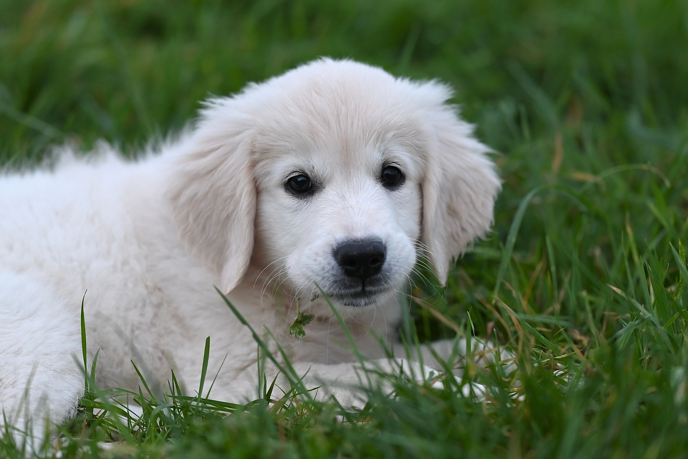

Little paws.
Lots to learn.
From zoomies to quiet cuddles, every companion has their own way of being. Get to know yours a little better.
Made with love for every little companion ♡
Happy paws, happy days
Make room for exploring, learning, and playing together. Choose activities that suit your dog's interests and abilities.
01 · Follow their nose
Let your dog pause to investigate interesting smells on a walk. Exploring with their nose gives them something to think about.
02 · Celebrate small wins
Practise a familiar cue and reward success with praise, a favourite toy, or a suitable treat. Keep learning enjoyable.
03 · Play a finding game
Hide a favourite toy somewhere easy to reach and let your dog find it. Start simply and make the game harder gradually.
Further reading: Dogs Trust activity ideas and RSPCA reward-based training .
Curious minds, cosy corners
Give your cat opportunities to play, scratch, and retreat somewhere quiet. Let them choose when to join in.
01 · Bring out the hunter
Move a wand toy for your cat to stalk, chase, and catch. Put toys with strings away after supervised play.
02 · Make a cosy hideaway
Offer a quiet hiding place, such as a cardboard box. Give your cat space when they choose to rest inside.
03 · Room to scratch
Provide a sturdy scratching post or pad. Notice whether your cat prefers stretching upwards or scratching a horizontal surface.
Further reading: Cats Protection play ideas and Blue Cross play guidance .
Small companions, individual needs
Rabbits, guinea pigs, and hamsters enjoy different activities. Choose enrichment designed for your pet's species and size.
01 · Rabbits love exploring
Provide roomy tunnels and a digging box filled with rabbit-safe materials, such as hay or shredded paper. Leave plenty of space to move around.
02 · Guinea pigs need hideaways
Offer shelters and tunnels so your guinea pigs can move between places where they feel secure. Keep their activity area at ground level.
03 · Hamsters are burrowers
Provide deep, suitable bedding that allows your hamster to dig and build tunnels. Add appropriately sized cardboard tubes for exploring.
Further reading: Rabbit activities , Guinea pig homes and Hamster care .